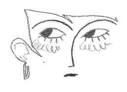

Yelyzaveta Ziborova
A Girl From My Dream
Digital illustration, linocut animation
Dreams, patterns and colors. My final work explores the topics of self identity, personas and growing out of things you once liked. Taken from my personal experience, the comic I created tells a story of a girl who made up a persona, another version of herself which encompassed everything and everyone she wanted to be. Using abstract storytelling and diary-like narration, the story follows the main character, her thoughts and experience of having another “self”. The comic is also accompanied by a series of 2 frame linocut animations.
instagram:@grriib
𖹭𖹭 back 𖹭𖹭